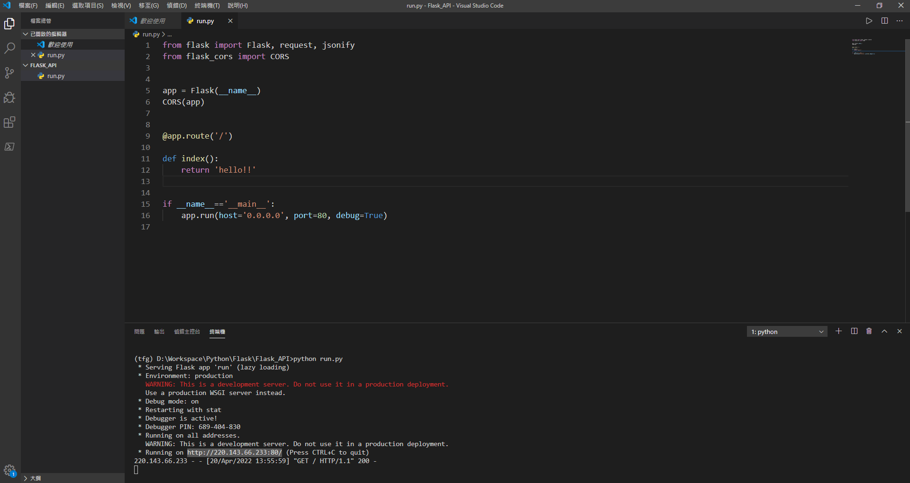
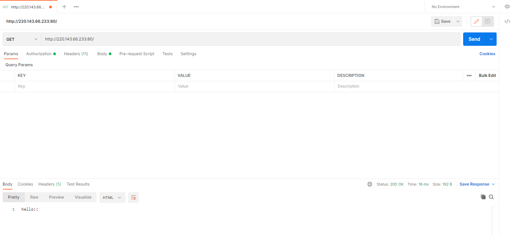
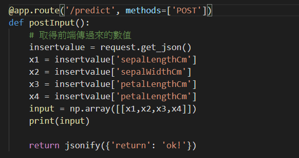
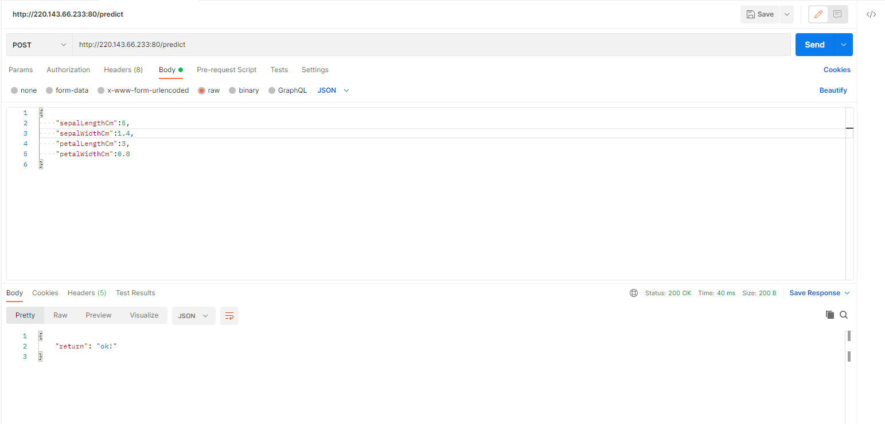
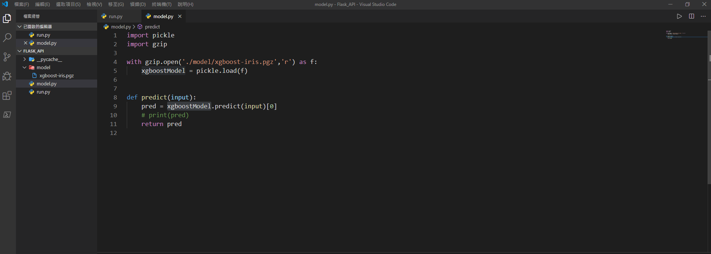
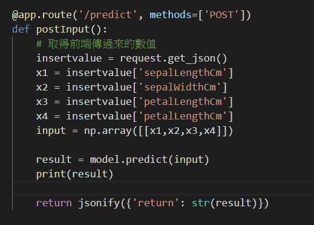
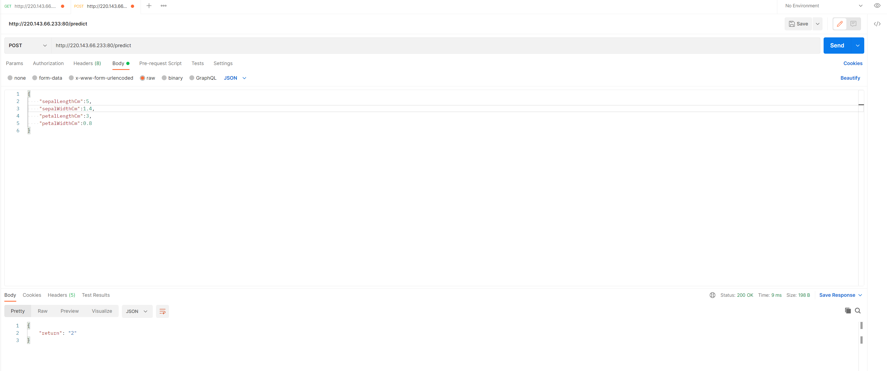

Flask 建構
Flask的架構
Flask是一個使用Python編寫的輕量級Web應用框架。基於Werkzeug WSGI工具箱和Jinja2模板引擎。Flask使用BSD授權。
Flask被稱為「微框架」，因為它使用簡單的核心，用擴充增加其他功能。Flask沒有預設使用的資料庫、表單驗證工具。然而，Flask保留了擴增的彈性，可以用Flask-extension[2]加入這些功能：ORM、表單驗證工具、檔案上傳、各種開放式身分驗證技術。:
建立Flask
使用Postman檢查是否成功
使用其他的route,method加上POST的寫法，取得前端傳過來的值。
結果
創建一個model資料夾(iris的預測結果)，傳值進去做預測。。
在route這邊取得前端的值，在傳入model做預測。
結果